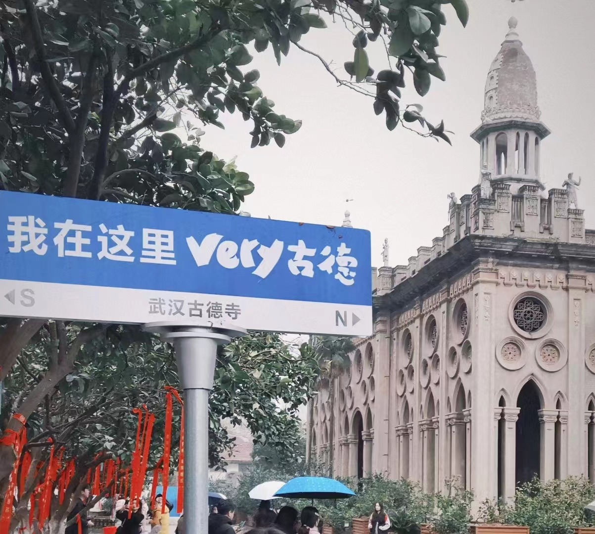
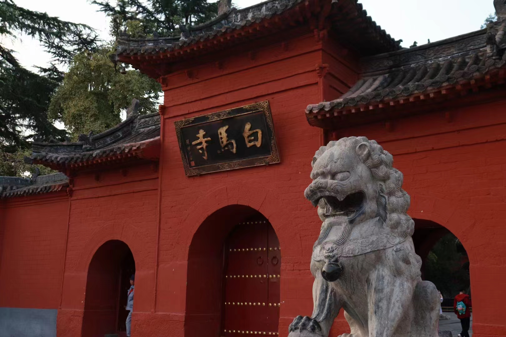
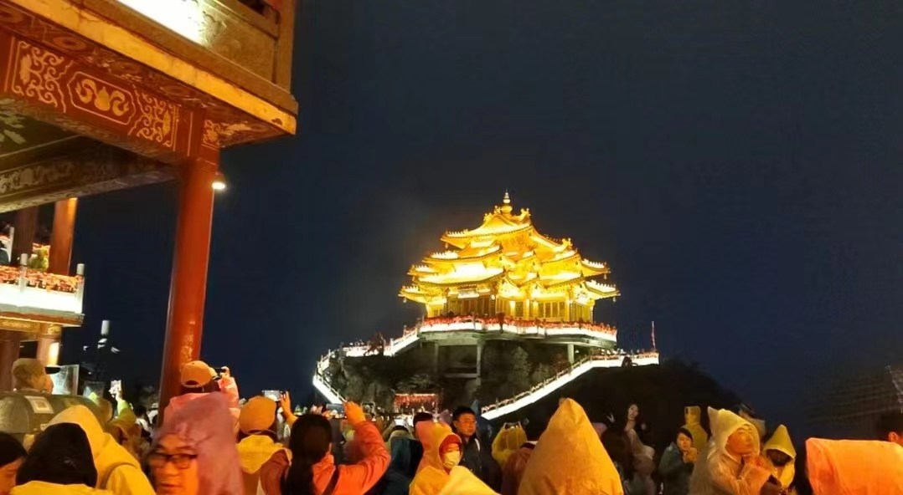
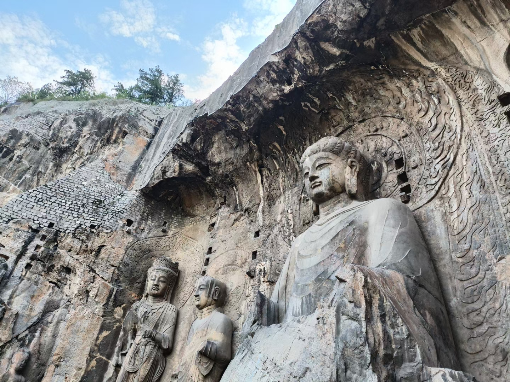
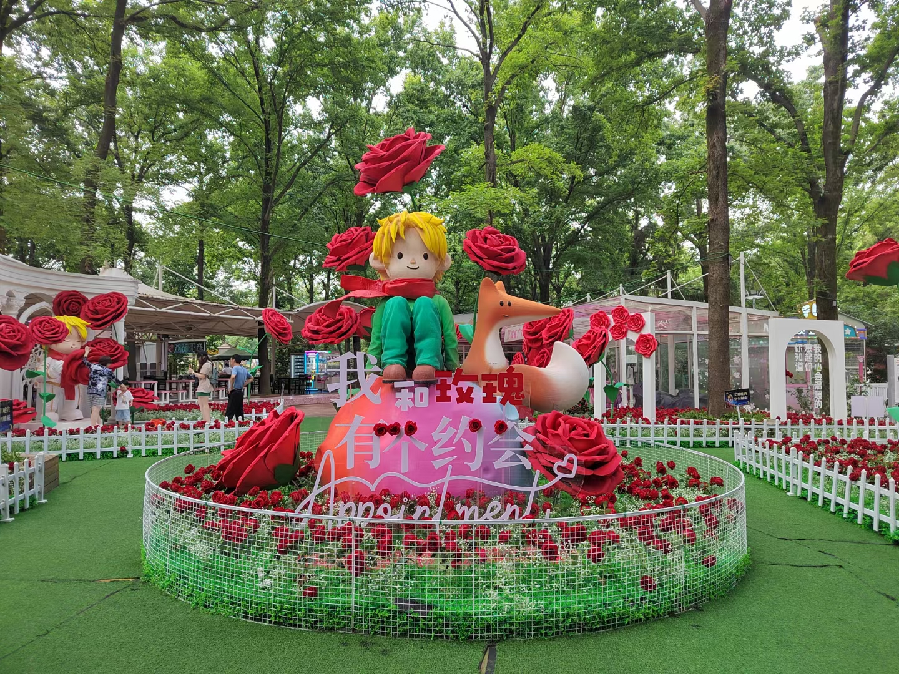
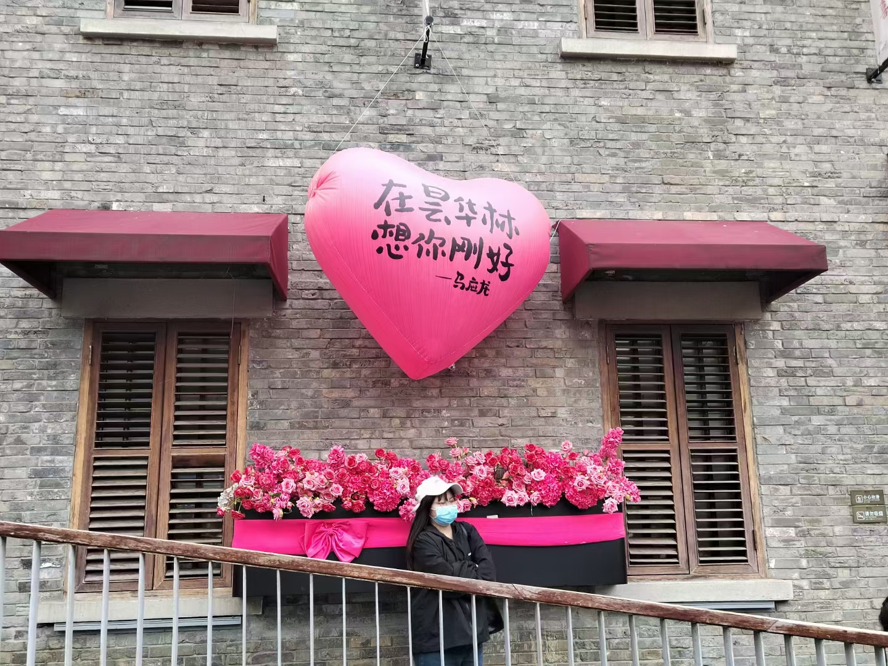

人生时间轴
| 时间 | 事件 |
|---|---|
| 2004年 | 出生于福建省宁德市 |
| 2010年 | 就读于晋江市心养小学 |
| 2016年 | 小学毕业，在晋江市实验中学读初中 |
| 2019年 | 初中毕业，在晋江市养正中学读高中 |
| 2022年 | 高考后，考入中南财经政法大学 |
| 2023年 | 分流到信息管理与信息系统专业 |
我的足迹

古德寺
古德寺位于湖北武汉，建于1877年，占地近3万平方米，融合欧亚宗教建筑特色，融大乘、小乘和藏密三大流派于一身，为“汉传佛寺第一奇观”。

白马寺
白马寺位于河南洛阳，始建于公元68年，是佛教传入中国后首座官办寺院，被誉为“释源”和“祖庭”，拥有中、印、缅、泰四国风格佛殿，是佛教圣地。

老君山
老君山，位于洛阳栾川，道教名山，海拔2217米。有千年人文历史，道教信众拜谒圣地，景色壮丽，庙宇众多，誉为“天下无双圣境，世界第一仙山”。

龙门石窟
龙门石窟位于河南洛阳，拥有2345个洞窟，11万余尊造像，是世界石刻艺术宝库，代表中国佛教艺术高峰，被誉为“中国石刻艺术的最高峰”。

东湖公园
武汉东湖公园：国家5A级景区，占地87.4万平方米，拥有33.6万平方米湖泊，集自然、文化、娱乐于一体，是武汉的“绿心”。

昙华林
昙华林：位于武汉武昌，全长1200米，明清老街，中西建筑交融，文艺与历史并存，是武汉的文艺街和历史文化街区。